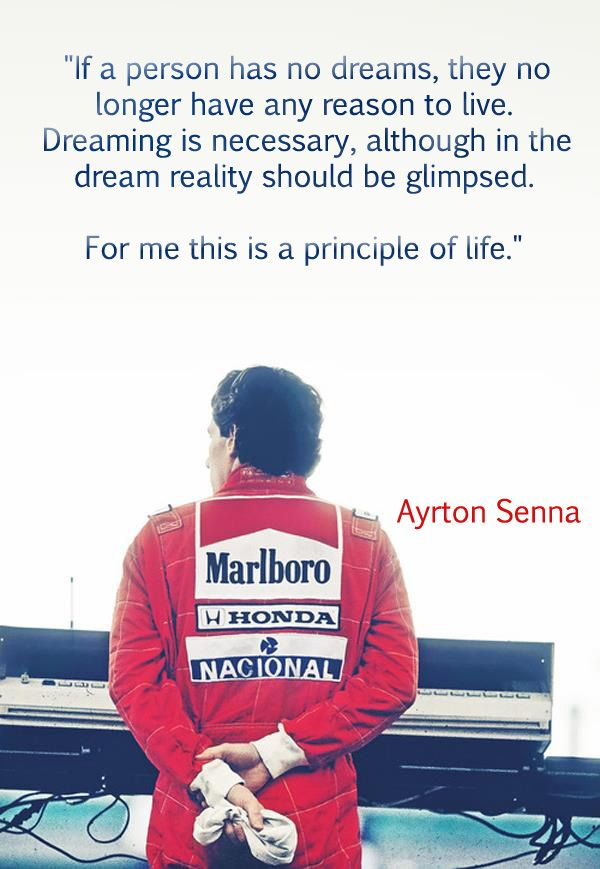
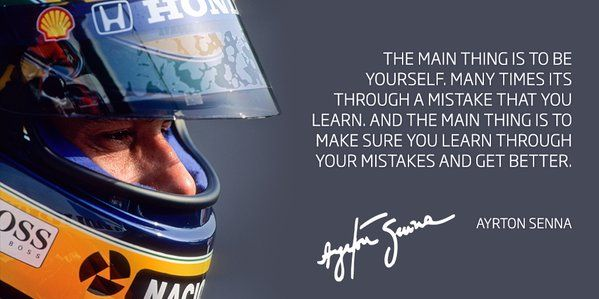
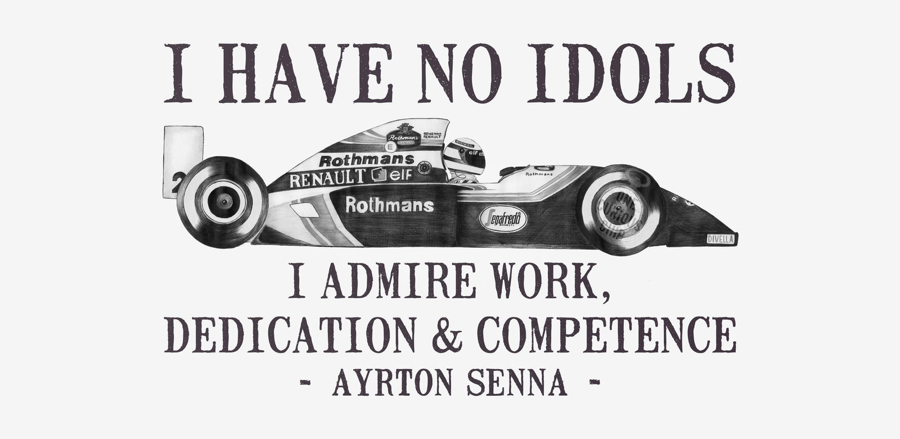
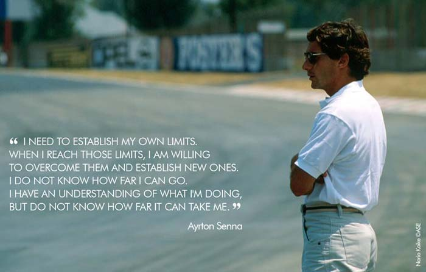
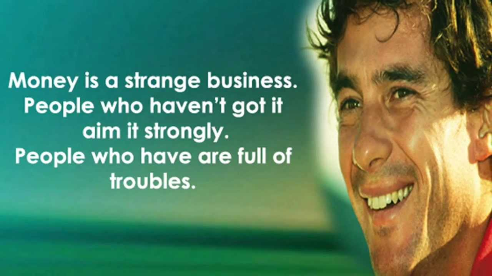
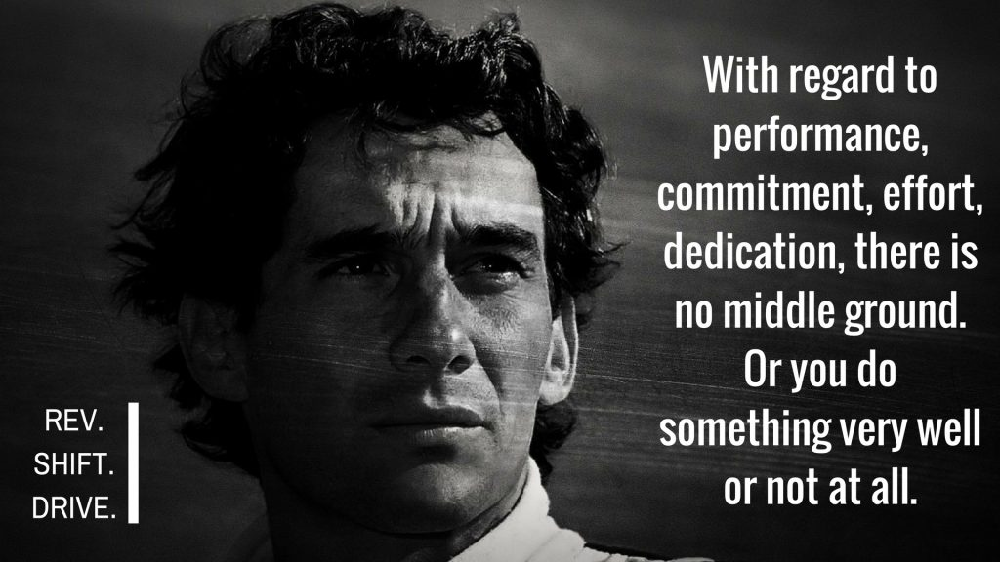
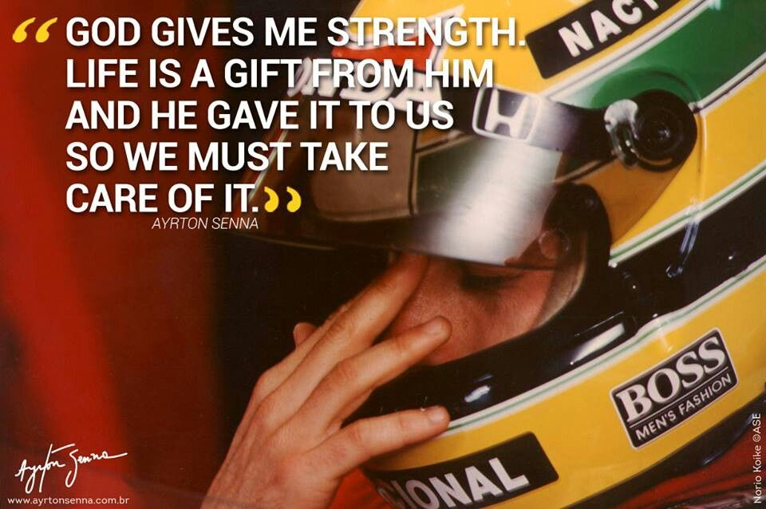

Imola gp 1994 will allways be remembered as the worst weekend ever. At friday practice Rubens Barrichello almost got killed in a big accident. The weekend still continued and at the saturday qualifying dissaster struck, Roland Ratzenberger got killed in a big accident, he didn't have a career in F1 at Sennas caliber but he still needs to be remebered.
Senna took pole on saturday and the race started with a accident. That led to one of the first safetycars in F1 history. Senna led the pack but on lap 7, the second racing lap he lost control of the car. unfortunately Senna left us that day.
      